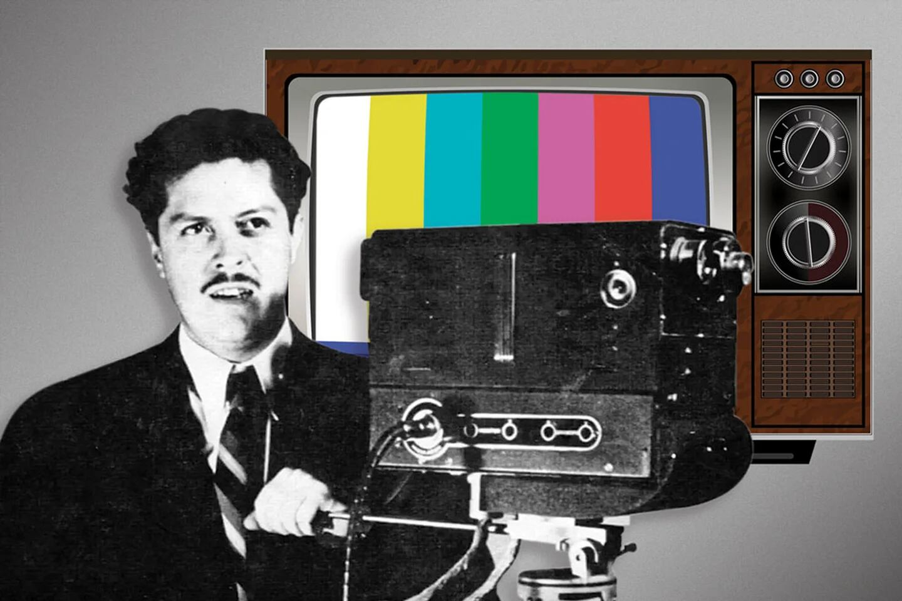

Tres Series de Televisión Mexicana que No te Puedes Perder!
En las décadas pasadas, la televisión mexicana clásica nos regaló momentos inolvidables y risas interminables a través de una amplia gama de programas de comedia que se han convertido en verdaderos tesoros de la cultura popular. Desde las entrañables aventuras del "Chavo del 8" en la vecindad más famosa de la televisión hasta las divertidas y alocadas situaciones de la peculiar familia Peluche, la pantalla chica nos transportó a un mundo de humor único e inolvidable. Cada programa, con sus personajes entrañables y sus historias llenas de ingenio, se convirtió en parte de la vida cotidiana de millones de espectadores, creando lazos de nostalgia y afecto que perduran hasta el día de hoy.
Familia P. Luche
La Familia P. Luche es una serie de comedia mexicana creada por Eugenio Derbez que parodia la vida de una familia de clase media mexicana, los Peluche. La serie está protagonizada por Ludovico Peluche, interpretado por Derbez, quien constantemente se encuentra en situaciones cómicas debido a su obsesión por mantener el estatus social y la apariencia perfecta de su familia, mientras lidia con personajes excéntricos como su esposa Federica, sus hijos Ludoviquito y Bibi, y su suegra Excelsa.
El Chavo del 8
El Chavo del 8 es una serie de televisión mexicana creada y protagonizada por Roberto Gómez Bolaños, conocido como "Chespirito". La serie sigue las divertidas aventuras de un niño huérfano, conocido como "El Chavo", que vive en una vecindad junto a otros personajes memorables como Quico, la Chilindrina, Don Ramón, Doña Florinda, y el Profesor Jirafales. A través de situaciones cómicas y emocionantes, la serie explora temas como la amistad, la solidaridad y la importancia de la familia encontrada.
Vecinos
Vecinos es una serie de comedia mexicana creada por Eugenio Derbez que sigue las historias de los residentes de un conjunto habitacional en la Ciudad de México. La serie presenta una variedad de personajes cómicos que lidian con situaciones cotidianas y absurdas, desde conflictos vecinales hasta malentendidos hilarantes. Con un elenco diverso y situaciones extravagantes, Vecinos ofrece una visión humorística de la vida en comunidad y las relaciones interpersonales.
Redes